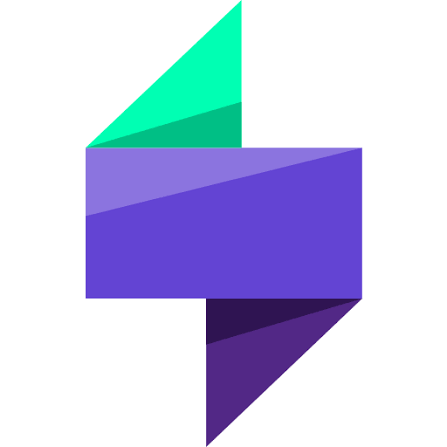
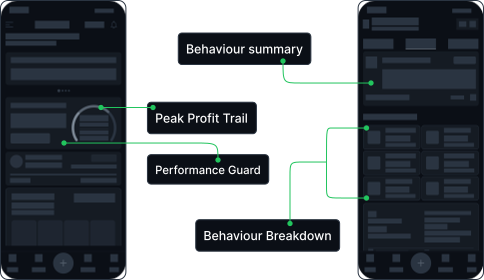
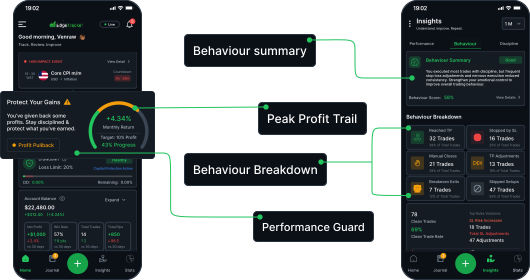

Main User Flow

.png)
Trade, Journal, Learn and Improve your trade
Where
Owerri, Imo State
What
Web app & mobile app
Why
Personal project
Role
Designer & researcher
category
Trading & fintech
When
August 2026
My experience with trading exposed a problem I wanted to solve: it was difficult to connect my trading decisions, behaviour, and performance in one continuous experience. I designed EdgeTracker to help traders understand their decisions, recognize risky behaviour, and stay in control of their trading process.

Market research summary
The trading journal market is already competitive, with established platforms offering trade tracking, performance analytics, behavioural insights, discipline tracking, and risk management. My research revealed an opportunity to explore a more proactive, mobile first experience one that helps traders recognize risk, protect their progress, and stay accountable to the limits they set. This shaped EdgeTracker around a simple goal: help traders stay in control while understanding the behaviours affecting their performance.
Market Growth
The trading software market is growing rapidly, with the global stock trading analysis software market estimated at $11.18B in 2025 and projected to reach $38.65B by 2032. This growth reflects increasing demand for tools that help traders analyse performance, behaviour, and decision making.
Existing trading journals offer powerful analytics, automation, psychology tracking, and AI. However, the research showed an opportunity to make the relationship between performance and trader behaviour more central to the experience. This became a key direction for EdgeTracker: helping traders not only review their results, but understand the behaviours and decisions behind them.
TradeZella

Edgewonk

TraderSync
The Positive
The Negative
should include commodities such as oil gold, etc. Tried to find Xauusd but could not find. Not work for gold trader like me. Tradersync -Playstore
Khoi Nguyen Minh
RO
1. Can not sync with my broker 2. Adding trades manually taking time and You can't see progress that way. 3.Asked for refund 1h after purchase and was told that they not doing refunds. Tradezella -Trustpilot
Robert
MO
It seems like a good journal but I can’t edit a close trade (must delete / re-enter). lastly support went unresponsive after initial reply. Edgewonk -Trustpilot
MOE
My experience as a trader initially shaped the problem I wanted to explore. I then used survey responses and feedback from other traders to test whether these challenges extended beyond my own experience.

15 Participants
Risk Management & Position Sizing
62%
Strategy Adherence & Rules Compliance
31%
Emotional Awareness & Discipline
38%
Consistency & Journaling Frequency
45%
Post Trade Reflection & Visual Context
12%
KF
KesterFX
Owerri
Would like to see a weekly auto summary of my trading experience
BF
BadooFx
Nnewi
For now nothing But having easy access to it like through my phone or desktop Cause i currently journal on a note book will make it more easy for me
EdgeTracker helps traders recognize when they're drifting away from the process they themselves defined
Traders can review their results, but few tools show when their behaviour is drifting from the rules they set. EdgeTracker connects planning, execution, review, and risk monitoring so traders can act before small mistakes become costly patterns.
I created two personas to represent the two primary user types identified during my research: traders who connect their trading accounts for automated tracking, and traders who manually record and manage their trading activity.

31
Futo
Owerri, Imo State
Vincent is an active swing trader who uses technical analysis to plan trades and manage risk. Through his trading experience, he identified difficulties connecting trade decisions, behaviour, journaling, and performance in one workflow.
31
Futo
Owerri, Imo State
Vincent is an active swing trader who uses technical analysis to plan trades and manage risk. Through his trading experience, he identified difficulties connecting trade decisions, behaviour, journaling, and performance in one workflow.

once I went through my research data it was time to sketch out the first flow and the initial low fidelity wireframes
To outline all the necessary functionality I created a simple flow diagram of the main tasks the user can do. One of the flows is shown below. Fail state flow were also created but are not shown due to space constraints.
With the main flow mapped, I sketched low-fidelity wireframes to decide where each feature lives before adding any visual styling. The first screen is the home screen, which puts the peak profit trail and the performance guard up front. The performance guard warns traders when they are falling behind their monthly target. The second screen is the behaviour analysis page, which gives a behaviour breakdown and a summary, so traders can see what is driving their results. Keeping everything grayscale let me test structure and hierarchy without color or branding influencing the decisions.

Once the main flow was complete, I started by defining the fonts and colors, then designed a couple of the main screens.
Color palette
Accent, Primary, Secondary, Tertiary, background

Fonts
Sans serif, Inter
AaBbCcDdEeFfGgHh

Including two state, manual account mode connection and connected accound mode, loss screen and a profit screen and also empty state.

I picked an 8 point grid for the project and set the margin for within groups at 8 and 16, with margins between groups 16, 24, 32 and 48

I connect my high-fidelity designs into a clickable prototype, that will allow me to test the app on a first group of users.

VF
VhikiceeFx
Abuja
My trading journal would do better if theres a journaling app with good notifications sysytem that can be linked directly to my trading account for auto journaling of my trades. This would help traders alot. I can be nonchalant to journaling some days and this has cost me to repeat same mistakes over and over again. A journaling app that can help improve discipline